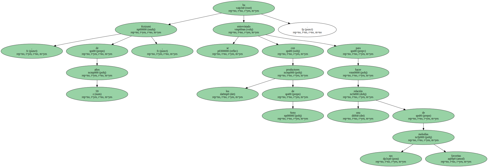
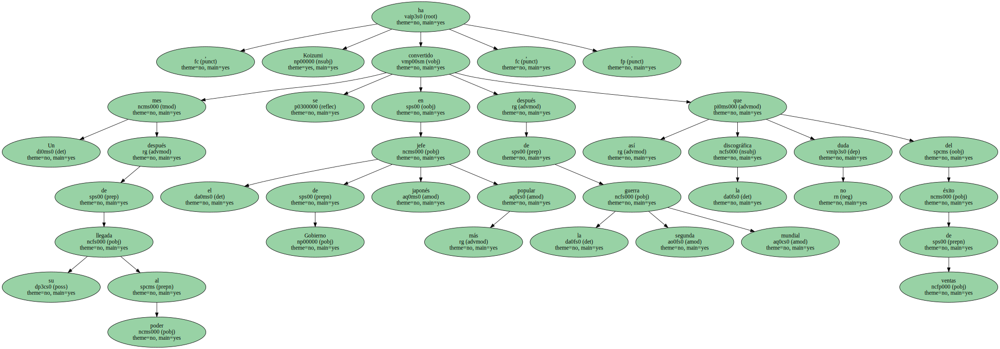

La música preferida del primer ministro japonés Junichiro Koizumi , un fanático seguidor del rock duro y Elvis Presley , será reunida próximamente en una recopilación.
Koizumi , de 59 años , se ha entrevistado con los productores de Sony para hacer una relación de sus melodías favoritas.
Entre ellas , no faltará la canción Forever Love , de los X-Japan , grupo del que el ministro es fan declarado hasta el punto de que sonó con fuerza en todos sus actos de campaña electoral.
En el compacto , que todavía no tiene fecha de salida al mercado , no faltará tampoco ni Elvis ni el italiano Arturo Paganini.

Un mes después de su llegada al poder , Koizumi se ha convertido en el jefe de Gobierno japonés más popular después de la segunda guerra mundial , así que la discográfica no duda del éxito de ventas.
